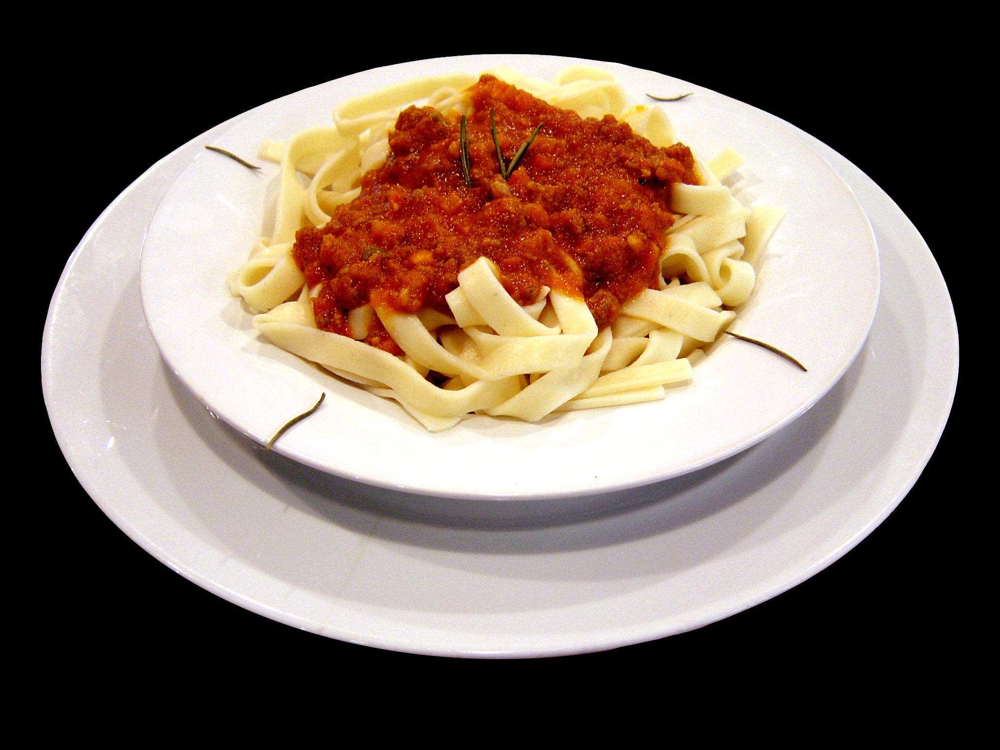

Pasta all'Amatriciana

Description
Pasta all'Amatriciana is a very tasty dish of the Italian tradition that can be prepared very easily.
It's perfect as the main course of a dinner among friends, especially when matched with a good bottle of red wine.
Ingredients
- 320g of spaghetti
- 150g of guanciale
- 400g of tomatoes
- 75g of pecorino
- 1 chili pepper
- salt
Steps
- Put some water in a pot, and begin to warm it over a stove.
- Cut the guanciale into small stripes. Brown the stripes into a pan.
- Put the chili pepper and the tomatoes inside the pan with the browned guanciale.
- When the water into the pot starts boiling, put some salt and the spaghetti in it.
- Once the spaghetti are cooked, drain them and put them into the guanciale pan.
- Grate the pecorino over the spaghetti and mix them together.
- The spaghetti all'Amatriciana are ready!
Back to the homepage